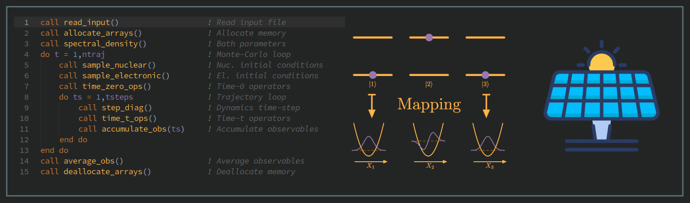
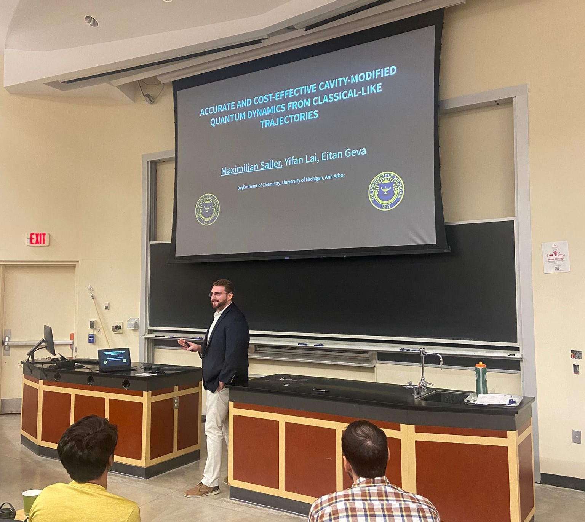
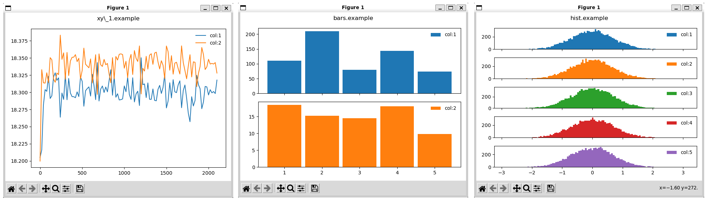
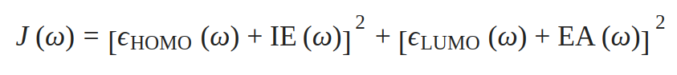

Research

Mapping Approach Quantum Dynamics
From solar cells to photosynthesis, many processes involving light-matter interactions are governed by the laws of quantum mechanics. To study them computationally we need simulation methods that can capture how they change over time; their quantum dynamics.
Using the formal laws of quantum mechanics results in dynamics methods that scale so badly with the size of the system that we could not simulate the photosynthetic reaction chain on the world's largest supercomputer, even if we ran it continuously for 10,000 years! We need cheaper, approximate methods, that still capture the essence of the quantum mechanical processes.
My research uses the mapping approach, a way to translate discrete electronic states into continuous variables, to develop quantum dynamics methods which can use classical trajectories. This means they not only scale much better than quantum mechanically exact methods, but they also are embarrassingly parallel. This means that my methods can run on arbitrarily large supercomputers without diminishing returns, even up to thousands or tens of thousands of CPU cores.
I have developed a class of methods, which build on existing mapping approach work, but drastically improve the accuracy of the quantum dynamics they return. I have applied these methods to a range of systems, from photosynthetic protein complexes to optical cavities.
For more information, see the following articles or get in touch!
Conferences

52nd Midwest Theoretical Chemistry Conference
2022 Ohio State University, Columbus, OH, USA
Contributed Talk
"Accurate and cost-effective cavity-modified quantum dynamics from classical-like trajectories"
Recent experimental observations of strong coupling between photonic cavity modes and molecular matter placed inside the cavity have highlighted potentially exciting new routes for controlling chemical processes. Elucidating the underlying physics and supporting the development of new experimental studies of such systems calls for accurate, flexible and cost-effective theoretical methods for calculating cavity-modified quantum dynamics. Methods based on the linearized semiclassical (LSC) approach show great potential in this respect due to their linear scaling with systems size and ability to interface with higher levels of theory in order to increase the accuracy of results. We have demonstrated two examples of LSC based approaches yielding highly accurate results for cavity modified quantum dynamics without incurring the prohibitively high computational costsassociated with numerically exact methods.
We have shown that a recently proposed set of modified LSC approaches, which use a modified form of the identity operator, considerably outperform traditional LSC without increasing computational cost. These methods yield accurate results for a series of benchmark systems modelling atomic systems placed inside cavities, highlighting their potential as a general purpose tool for simulating cavity-modified dynamics of complex chemical systems.
We have also demonstrated that for charge transfer systems inside cavities, using LSC in conjunction with the Fermi’s Golden Rule approach for calculating rate constants constitutes another powerful tool for the study of quantum dynamics inside cavities. This method for calculating cavity-modified rate constants can in fact yield quantum mechanically exact results for a commonly studied class of light-matter Hamiltonians.
Contact

Dr Maximilian Saller
University of Michigan
Department of Chemistry
E-mail: msaller@umich.edu
Kent State University
Department of Chemistry & Biochemistry
E-mail: msaller@kent.edu
Non-Academic Inquiries
E-mail: maximilian.a.c.saller@gmail.com
Software
Plot.py

Sometimes you want to plot a data file with a single command. We all sort of know how to do this with gnuplot. But let's face it: matplotlib is more beautiful and better in almost every way. This small, light-weight python scipt lets you do exactly this kind of quick plotting Plus, the matplotlib GUI will let you easily rescale and reframe the plots and save them as images. Don't make figures for publication with this! But if you just wanna take a quick peek at what's in a file, this is your guy!
Clone the GitHub repo here!
RSHtune

Range-Separated Hybrid (RSH) density functionals have shown real potential as a user-tunable solution for electronic structure theory, especially when extended to screenig the long-range exchange based on a solvated environment. The parameter controlling the separation between the long and short range is commonly optimised using DFT-Koopman's theorem as the fitness function in a process termed optimal tuning. The RSHtune package automates the optimal tuning process for the popular Q-Chem electronic structure software package.
Clone the GitHub repo here!
Curriculum Vitae
Full PDF Resumes
Short Resume
-
2022 - 2023
Postdoctoral Research Fellow
Dunietz Research Group
Kent State University, OH, USA
-
2020 - 2022
Postdoctoral Research Fellow
Geva Research Group
University of Michigan, MI, USA
-
2017 - 2020
Postdoctoral Research Fellow
Richardson Research Group
ETH Zurich, Zurich, Switzerland
-
2013 - 2017
PhD in Theoretical Chemistry
Habershon Research Group
University of Warwick, Coventry, UK
-
2009 - 2013
MChem (Hons) in Theoretical Chemistry
Tozer Research Group
University of Durham, Durham, UK